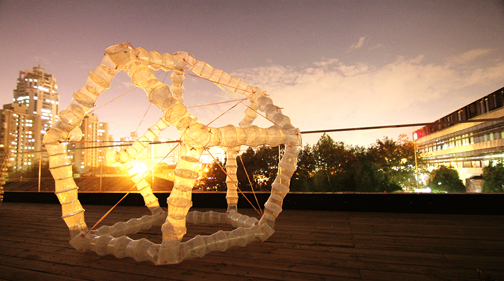
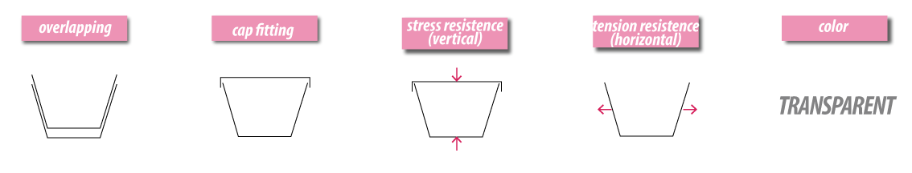
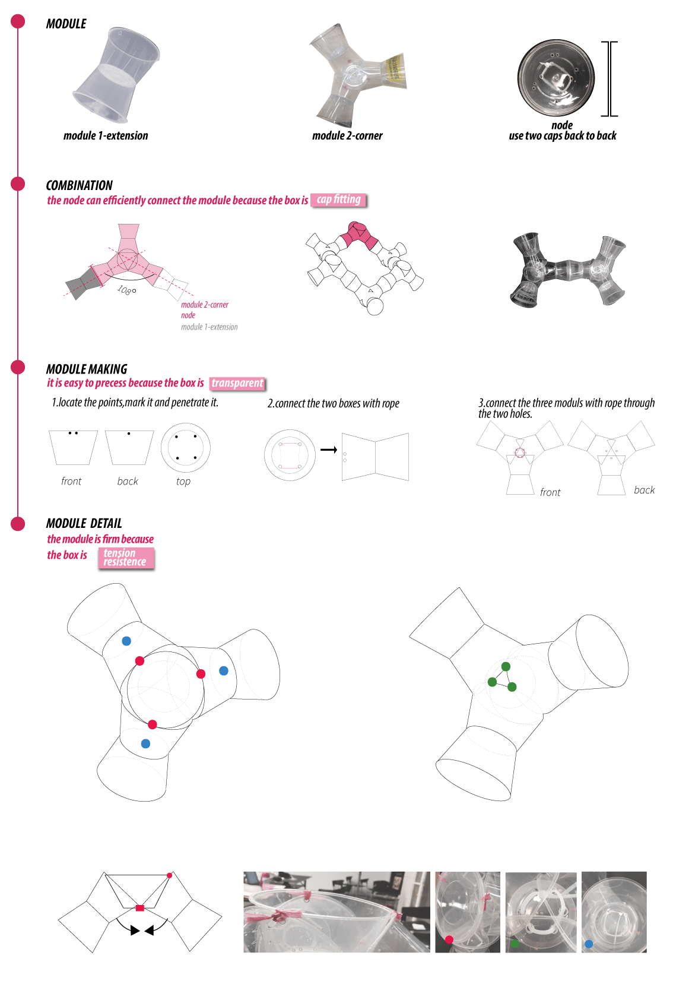
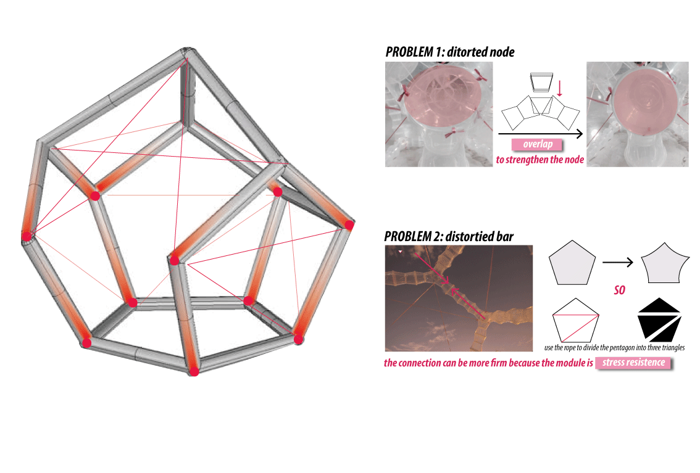
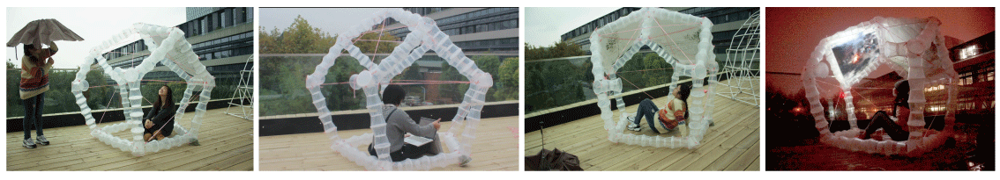

Translucent Skeleton
Structure Design of Waste Food Box
Group Work(Sun Li, Liu Yezi) Tutor: ZhuXiaocun, Mary Polites Tool: Rhino, Scan&Solve Skill: Structure Design

Brief
In China,the boom of online take-out order platform bring about the excessive manufacture and use of disposable food box.
This trend causes “white pollution”.Material of fast food packages are PP.
Without an efficient recycle system,the majority of them will be landfilled or incinerated, and the process will produce tons of pollutant.
Question
How to deal with so many waste food package, making the most of its materil characteristic?
Solution
I make the most of material characteristics to build a structure, serve as a temporary shelter or an installation.
Material Analysis

Building!
01. Structure of Module
Logic of building module is based on features of material.


02. Combine Module
Features of material is still utilized in constructing the whole structure.

03. Construction on Site

Senario
